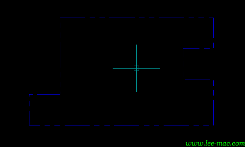

Multi-Polyline
This page is delivered for consistency purposes only, as part of the LeeMac sample module of DynALisp, which shows how DynALisp turns existing AutoLISP programs into a module. The program and its description are the work of Lee Mac, who keeps all the credit for them. The original page, with the latest version, is on Lee Mac's website: https://lee-mac.com/mpline.html
| Function Syntax | LM-MultiPolyline – original syntax: mpl (see aliases) |
| Current Version | 1.1 |
| Compatible with AutoCAD for Mac? | No |
| Compatible with AutoCAD LT? | Yes |
| Original Page | lee-mac.com/mpline.html |
Program Description
This simple program enables the user to create objects with the appearance of multilines, however, which are composed of standard polylines.
Upon issuing the command syntax MPL at the AutoCAD command-line, the program will invoke the standard AutoCAD MLINE command, allowing the user to construct the object with the real-time dynamic preview afforded by the MLINE command, however with the resulting multiline automatically exploded & joined to form standard 2D polylines.
Such a command could be useful for quickly drafting of the cross-section of a pipeline, duct or wall.
Demonstration

Bundled program notes
;;------------------------=={ Multi-Polyline }==-----------------------;;
;; ;;
;; This program enables the user to create objects with the appearance ;;
;; of multilines, however, which are composed of standard polylines. ;;
;; ;;
;; The program will invoke the standard AutoCAD MLINE command, ;;
;; allowing the user to construct the object with the real-time ;;
;; dynamic preview afforded by the MLINE command, with the resulting ;;
;; multiline automatically exploded & joined to form standard 2D ;;
;; polylines. ;;
;;----------------------------------------------------------------------;;
;; Author: Lee Mac, Copyright © 2010 - www.lee-mac.com ;;
;;----------------------------------------------------------------------;;
;; Version 1.0 - 2010-06-19 ;;
;; ;;
;; First release. ;;
;;----------------------------------------------------------------------;;
;; Version 1.1 - 2015-09-12 ;;
;; ;;
;; Program rewritten. ;;
;;----------------------------------------------------------------------;;
Command Names And Aliases
As in every DynALisp module, each program of this sample module has one main command, named LM-*, and the original command names of Lee Mac's page are kept as its aliases: they run the same command, and can be added, renamed or removed in Dyl-Suite (saved in Resources\Aliases.csv).
| Command | Aliases | Name |
|---|---|---|
| LM-MultiPolyline | MPL | Multi-Polyline |